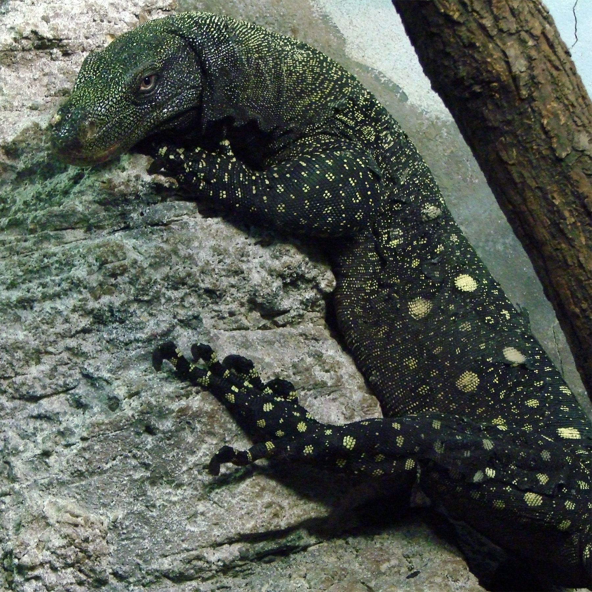
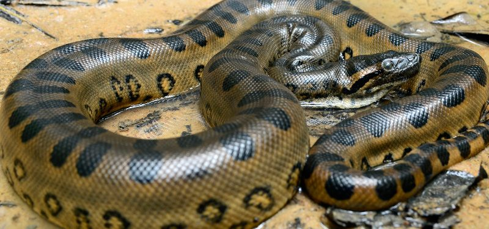

Este reptil se encuentra en pastizales abiertos secos, sabanas y bosques tropicales en elevaciones bajas.
Los dragones de Komodo se encuentran en algunas islas pequeñas al este de Bali y al sur de Borneo, incluidas la isla de Komodo, la isla de Flores, la isla de Rinca y la isla de Padar.
Los dragones de Komodo habitan mayormente en las islas de la Sonda, en el archipiélago indonesio, incluyendo además las islas de Komodo, Flores, Gili Dasami, Gili Montang, Rinca y Padar. Por lo general, prefieren espacios abiertos de tierra con una vegetación moderada. Aun así, el hábitat de los dragones de Komodo también puede incluir otras áreas como playas y zonas costeras, elevaciones montañosas y riberas de ríos. Las especies más jóvenes de este lagarto habitan frecuentemente en lo alto de los árboles, aunque por lo general, cualquier zona cálida y con cierta vegetación será más que suficiente para que puedan vivir.
- Se caracteriza por ser el lagarto más grande del mundo
- De mordida venenosa
- Capaz de reproducirse sexual y asexualmente
- Oviparo
- Carnívoro
Regresar al Menu
VARANO DE PAPUA
(Varanus salvadorii)

El varano de Papúa o varano cocodrilo es una especie de lagarto de la familia Varanidae. Es endémico de la isla de Nueva Guinea. Su rango altitudinal se encuentra entre los 0 y los 740 metros de altitud.
caracteristicas
HÁBITAT. Pantanos, manglares y litorales de selvas tropicales. ...
DIETA. Carnívoros, se alimentan de aves, huevos, pequeños mamíferos como roedores, reptiles, anfibios, insectos así como de carroña.
GESTACIÓN. Incubación 3 a 4 meses.
Nº DE CRÍAS. 4 a 12.
VIDA. 12 a 20 años.
Regresar al Menu
ANACONDA VERDE
(Eunectes murinus)

La anaconda verde o común es una especie de serpiente constrictora de la familia de las boas. Es endémica de los ríos del trópico de Sudamérica.
caracteristicas
LLega a tener cerca de 10 metros de longitud.
Su color es gris-verde con manchas redondas oscuras.
posee un cuerpo voluminoso y pesado.
está preparada para permitir un desplazamiento sin necesidad de extremidades.
se aliementa de peces, pájaros, algunos reptiles, ratas etc.
Regresar al Menu
tortuga carey
(eretmochelys imbricata)
La tortuga carey es una especie de tortuga marina de la familia de los quelónidos. Es la única especie del género Eretmochelys. Existen dos subespecies, Eretmochelys imbricata imbricata que se puede encontrar en el océano Atlántico y Eretmochelys imbricata bissa, localizada en la región indo-pacífica.
caracteristicas
Es la tortuga más tropical de todas las especies de tortugas marinas
Se encuentra en aguas tropicales y subtropicales
La cabeza está cubierta por escamas queratinizadas.
A medida que crecen su cabeza se alarga llegando a ser cerca del doble de larga.
como en las otras de las especies de tortugas marinas, en individuos adultos existe dimorfismo sexual
Regresar al Menu

Se le relaciona con desiertos y zonas áridas de elevadas temperaturas, pero también sobreviven en bosques, praderas, pantanos y colinas rocosas. Su rango de temperatura es de 26 a 32° C pero se ha observado que algunas llegan a vivir sin problema con 2° C.
- Venenosa
- Son fácilmente reconocibles por el característico sonido de su cascabel
- Su cuerpo está cubierto por pequeñas y múltiples escamas de colores variados
- Carecen de párpados, pero sus ojos están protegidos por duras escamas transparentes
- sus oídos son disfuncionales
Regresar Menu
Regresar Inicio